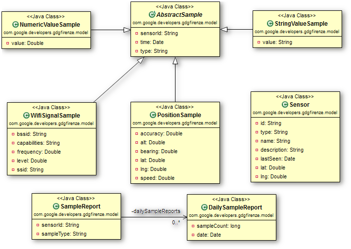
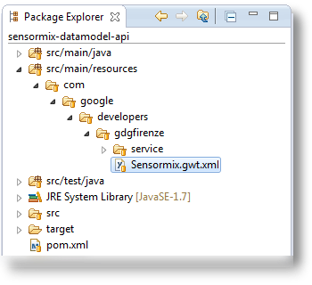

SensorMix
Architettura di esempio basata su Servicemix, Camel e GWT
Come è composto SensorMix
Architettura interna
Come è composto SensorMix
Architettura esterna

Demo
Data Model Bundle
Il Canonical Data Model EIP
Dal libro EIP:
“I am designing several applications to work together through Messaging. Each application has its own internal data format.”
“How can you minimize dependencies when integrating applications that use different data formats?”

Il Canonical Data Model EIP

Il nostro approccio al CDM
A noi piace l’approccio Java first:
- Modello dati: POJO
- Modello servizi: Interfacce Java
Usiamo annotazioni JaxB e JaxWS per generare dal nostro modello gli XML Schema e WSDL.
Troviamo che cominciare dagli oggetti sia più naturale, lineare e agile:
- Lo XML Schema finale risulta più pulito
- Si può fare a meno della validazione XML
- eccezioni Java = XML non valido
- Lavorare sulle classi Java è più veloce (per noi che siamo sviluppatori)
POJO annotati JaxB
@XmlAccessorType(XmlAccessType.FIELD)
@XmlType(name = "SampleReport")
public class SampleReport implements Serializable {
/** The sensor id. */
@XmlAttribute(required = true, name = "sensorId")
@XmlSchemaType(name = "anyURI")
private String sensorId;
/** The sample type. */
@XmlAttribute(required = false, name = "sampleType")
private String sampleType;
/** The daily sample reports. */
@XmlElement(required = false, name = "dailySampleReport")
private List<DailySampleReport> dailySampleReports;
// ...

Interfaccia annotata JaxWS
@WebService(name = "SensormixService",
targetNamespace = "http://developers.google.com/gdgfirenze/ns/service")
@SOAPBinding(parameterStyle = ParameterStyle.WRAPPED, style = Style.DOCUMENT, use = Use.LITERAL)
public interface SensormixService {
@WebMethod(action = "urn:#listSensorsIds")
@RequestWrapper(localName = "listSensorsIdsIn",
targetNamespace = "http://developers.google.com/gdgfirenze/ns/service")
@ResponseWrapper(localName = "listSensorsIdsOut",
targetNamespace = "http://developers.google.com/gdgfirenze/ns/service")
@WebResult(name = "sensorId")
List<String> listSensorsIds();
@WebMethod(action = "urn:#listSamplesTypes")
@RequestWrapper(localName = "listSamplesTypesIn",
targetNamespace = "http://developers.google.com/gdgfirenze/ns/service")
@ResponseWrapper(localName = "listSamplesTypesOut",
targetNamespace = "http://developers.google.com/gdgfirenze/ns/service")
@WebResult(name = "sampleType")
List<String> listSamplesTypes();
// ...

Utilizzo del CDM su GWT
Infine, se si vuole usare il data model anche dentro un progetto GWT, basta aggiungere un modulo .gwt.xml:
<?xml version="1.0" encoding="UTF-8"?>
<!-- When updating your version of GWT, you should also update this DTD reference,
so that your app can take advantage of the latest GWT module capabilities. -->
<!DOCTYPE module PUBLIC "-//Google Inc.//DTD Google Web Toolkit 2.5.1//EN"
"http://google-web-toolkit.googlecode.com/svn/tags
/2.5.1/distro-source/core/src/gwt-module.dtd">
<module>
<!-- Specify the paths for translatable code -->
<source path='model' />
<source path='service' />
</module>

Data Service Bundle
Il bundle dataservice
Contiene un servizio che espone funzionalità di memorizzazione e recupero di informazioni
Il servizio viene registrato in OSGi tramite Spring DM
La registrazione del servizio
<osgix:cm-properties id="dataSourceProperties"
persistent-id="sensormix.jpa.persistenceunit">
<prop key="sensormix_db.driverClassName">org.hsqldb.jdbcDriver</prop>
<prop key="sensormix_db.url">jdbc:hsqldb:mem:sensormix_db</prop>
<prop key="sensormix_db.username">sa</prop>
<prop key="sensormix_db.password"></prop>
</osgix:cm-properties>
<osgi:service ref="sensormixService">
<osgi:interfaces>
<value>com.google.developers.gdgfirenze.service.SensormixService</value>
<value>com.google.developers.gdgfirenze.osgi.SensormixAdminInterface</value>
</osgi:interfaces>
</osgi:service>
Il servizio in java
public class SensormixServiceJpaImpl implements SensormixService, SensormixAdminInterface {
private EntityManagerFactory entityManagerFactory;
@Override
public List<String> listSensorsIds() {
List<String> result = new ArrayList<String>();
try {
EntityManager em = entityManagerFactory.createEntityManager();
TypedQuery<String> q = em.createQuery("SELECT s.id FROM JpaSensor s", String.class);
result.addAll(q.getResultList());
em.close();
} catch (Exception e) {
logger.log(Level.SEVERE, "Error during sensors list retrieving", e);
}
return result;
}
Spring ORM
<bean id="emf" class="org.springframework.orm.jpa.LocalContainerEntityManagerFactoryBean">
<property name="persistenceUnitName" value="sensormix_db" />
<property name="jpaVendorAdapter">
<bean class="org.springframework.orm.jpa.vendor.EclipseLinkJpaVendorAdapter">
<property name="showSql" value="true" />
</bean>
</property>
<property name="jpaProperties">
<props>
<prop key="eclipselink.ddl-generation">create-tables</prop>
<prop key="eclipselink.logging.level">INFO</prop>
<prop key="eclipselink.weaving">false</prop>
<prop key="javax.persistence.jdbc.driver">${sensormix_db.driverClassName}</prop>
<prop key="javax.persistence.jdbc.url">${sensormix_db.url}</prop>
<prop key="javax.persistence.jdbc.user">${sensormix_db.username}</prop>
<prop key="javax.persistence.jdbc.password">${sensormix_db.password}</prop>
</props>
</property>
</bean>
<bean id="sensormixService"
class="com.google.developers.gdgfirenze.dataservice.SensormixServiceJpaImpl">
<property name="entityManagerFactory" ref="emf" />
</bean>
Integration Bundle
Il bundle di integrazione
Definisce le rotte Camel per l'ingresso dei campioni da Android, Arduino e iOS
Utilizza quasi esclusivamente configurazione via Spring XML
Unica eccezione: la classe SampleAdapter che trasforma da protocol buffer al nostro data model tramite codice java
Le rotta di ingresso UDP e HTTP
Usate da Android e da Arduino
<route> <from uri="mina2:udp://0.0.0.0:10081" /> <to uri="seda:jsonEntry" /> </route>
<route>
<from uri="jetty:http://0.0.0.0:10080/sensormixSamplesEndpoint" />
<to uri="seda:jsonEntry" />
<setHeader headerName="Content-Type">
<constant>application/json</constant>
</setHeader>
<to uri="velocity:vm_templates/json_response_template.vm" />
</route>
La rotta di trasformazione del JSON
<route>
<from uri="seda:jsonEntry" />
<convertBodyTo type="java.lang.String" />
<unmarshal>
<xmljson elementName="item" arrayName="list" rootName="root" />
</unmarshal>
<to uri="xslt:xslt_adapters/raw2cdm_adapter.xsl" />
<unmarshal>
<jaxb contextPath="com.google.developers.gdgfirenze.service" />
</unmarshal>
<to uri="seda:serviceEntry" />
</route>
La rotta TCP + ProtoBuf
<bean id="sampleAdapter"
class="com.google.developers.gdgfirenze.integration.SampleAdapter" />
<route>
<from uri="netty:tcp://0.0.0.0:10082/?decoders=#length-decoder&sync=false" />
<unmarshal>
<protobuf instanceClass="com.google.developers
.gdgfirenze.protobuf.SensormixProtos$SampleMessage" />
</unmarshal>
<bean ref="sampleAdapter" method="transform" />
</route>
package com.google.developers.gdgfirenze.integration;
public class SampleAdapter {
public SamplesPayload transform(SampleMessage message) {
SamplesPayload ret = new SamplesPayload();
// process 'SampleMessage' and return the adapted 'SamplesPayload'
return ret;
}
}
L'output verso il servizio OSGi
<osgi:reference id="sensormixService"
interface="com.google.developers.gdgfirenze.service.SensormixService"
timeout="30000" cardinality="1..1" />
<route>
<from uri="seda:serviceEntry" />
<to uri="bean:sensormixService?method=recordSamples(${body.samples})" />
</route>